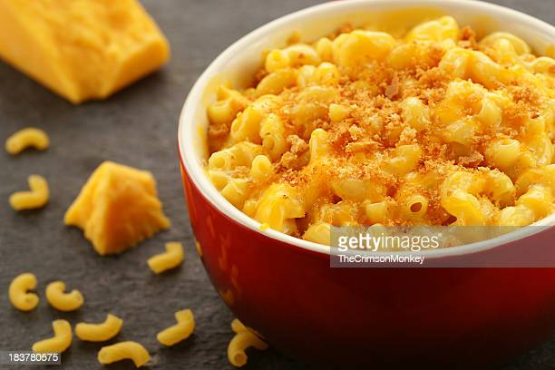

At a very young age, I was quite found of eating. And to be completely honest, I still am(who can blame me.). So here is a pick of my top 3 meals that I cannot resist.XD
- Mac And Cheese:
The Mac and Cheese is arguably a cheesy one. It combines all my fav nutrients, carbs and proteins, in a succulent european dish. - Paprika Chicken Legs
It is hot and spicy. Nothing more to say about this recipe. It is just a pure delight(of spices). - Beef Tacos
The Beef Tacos just takes you to Maxicoin an instant. Ever wondered how to make simple ground beef tacos that are as good as the ones you enjoy at your local taqueria? Well, this link will show you how.